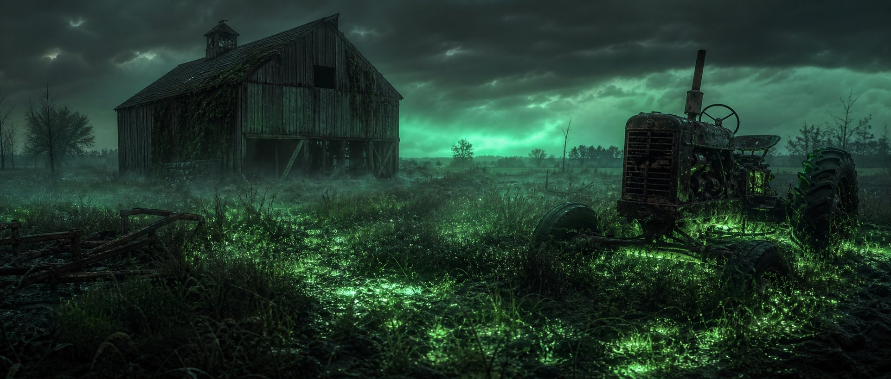
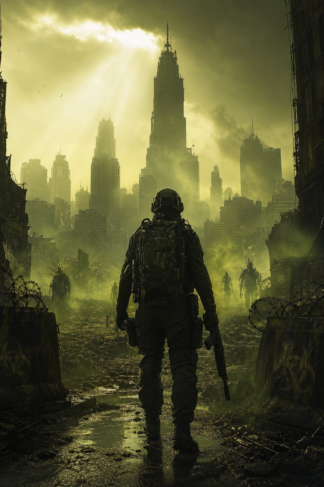
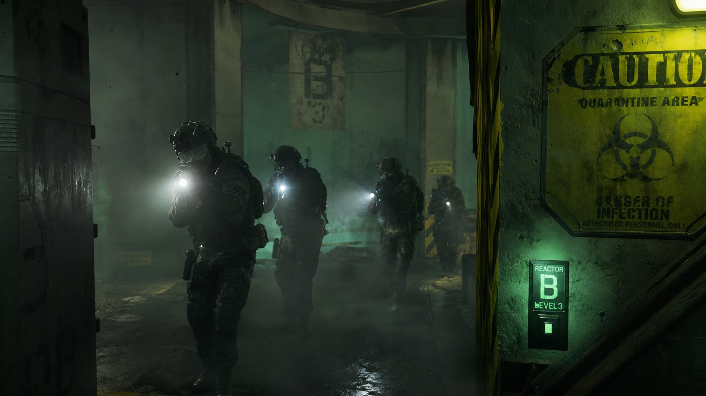
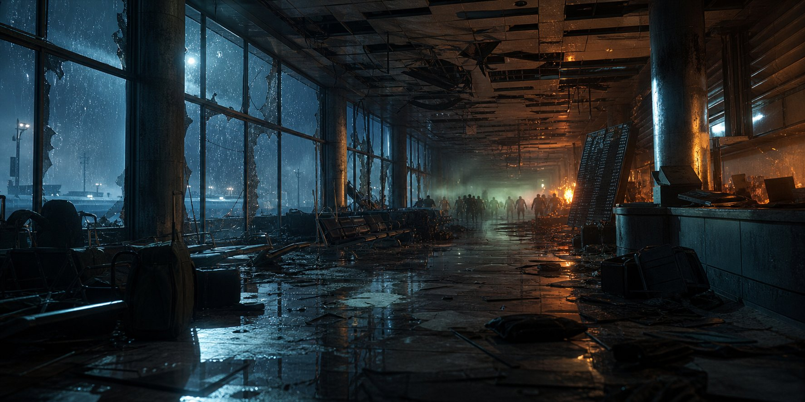
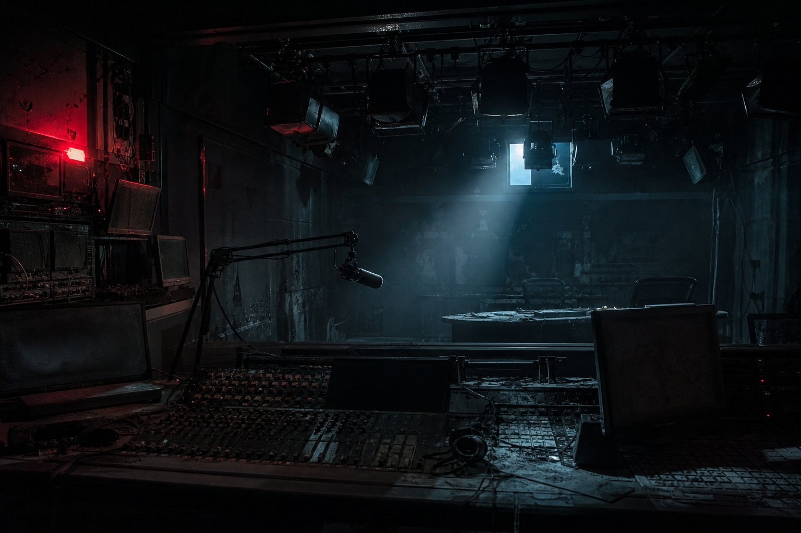
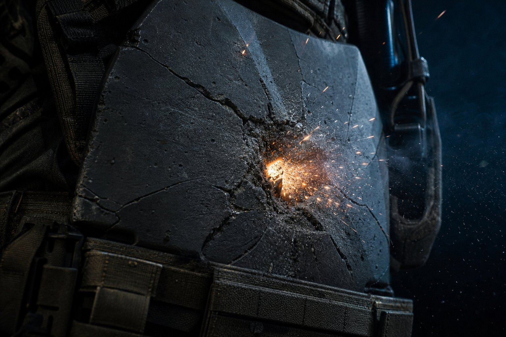

1. La saison en bref
Utopia est la saison la plus structurante de l'histoire d'ABI. Elle introduit pour la première fois un vrai mode zombie — deux modes distincts — tout en réécrivant le cœur du combat PvP : portées effectives augmentées, headshots renforcés, plafonds d'équipement par mode et suppression du RNG de pénétration sur les armures de classe V et VI.
Le compte n'est pas wipe. Votre stash, vos Koen, votre niveau de personnage et vos Bonds sont conservés. Seuls le rang de saison et la progression des missions / Battle Pass repartent de zéro — l'échelle que vous gravissez pendant la saison, pas votre compte.
2. Les 10 nouveautés majeures

Zone infectée PvPvE
Extraction classique augmentée de 6 types de mutants sur Farm, Valley et Airport. Progression par échantillons via Zombie Research.

Zombie Endless PvE
Survie en équipe de 1 à 4 sur l'Airport dès le niveau 8. Loadout imposé, mort définitive, progression par Merit.

2 armes + 4 season kits
L'A545 rejoint le sommet du meta aux côtés du U191 et du H416. L'AK-15SC écrase le close-to-mid. Quatre kits saisonniersenian inaugurent le concept.

Le rééquilibrage majeur
Plafonds d'équipement par mode, RNG T5/T6 supprimé, headshots plus payants, flashlights nerfed, TTK global allongé.
3. Ce qui change dans CHAQUE raid
| Changement | Effet concret | Impact |
|---|---|---|
| Portée effective augmentée | Les armes conservent leurs dégâts plus loin | Fusils redeviennent pertinents en zone ouverte |
| Headshots renforcés | Récompense plus régulière pour les tirs à la tête | La précision vaut plus que le volume |
| Plafond par mode | Normal : T4 et moins · Lockdown : T5 et moins | Fini le hot-drop en kit rouge contre des déshérités |
| RNG T5/T6 supprimé | Pas de « chance » de percer le haut de gamme | Duels d'armure déterministes, TTK au torse plus long |
| Ricochets supprimés | Plus de rebond sur casques et masques | Durabilité T5/T6 perdue plus vite |
| Flashlight nerfé | Éclairage réduit, ergonomie à -7 | Fin de l'aveuglement garanti |
La règle d'or de la saison
Le Pierce Level d'une munition vaut plancher(Pénétration ÷ 10) et se compare au Niveau d'armure de la plaque visée. Sous le RNG supprimé : pas de niveau de pénétration, pas de percée. Vérifiez vos calibres avant chaque sortie.
4. Les trois modes à distinguer
| Mode | Type | Cartes | Progression |
|---|---|---|---|
| Infected Zone | PvPvE extraction | Farm (Heavy), Valley (standard), Airport (Heavy) | Zombie Research |
| Zombie Endless | PvE survie | Airport (débloqué niveau 8) | Merit → capacités |
| No Man's Land | PvE entraînement | Zone d'entraînement (billets) | Échantillons zombies |
| Tactical Ops | PvP extraction | Toutes les cartes, hors zones contaminées | Rang de saison, Koen |
Trois sections de mission qu'il vaut mieux contourner
La progression de faction de la Saison 7 se fait par sections obligatoires. Trois d'entre elles sont très coûteuses en raids pour une progression de second rang, et il existe un mécanisme de contournement : passer à la section suivante sans les valider complètement.
- Section 1 — « Underground Exploration » : exige de survivre à dix missions d'extraction urgentes. Le trafic y est dense, et c'est un goulot d'étranglement économique : beaucoup de raids pour une récompense qui se débloque ailleurs plus vite.
- Section 2 — « Intern Disruption » : impose d'extraire par un ascenseur de deuxième étage très exposé, tout en étant restreint à l'usage de grenades. C'est le piège à wipe d'escouade le plus signalé de la saison.
- Section 3 — « Comms Interference » : force à interagir avec un marchand précis dix fois, plafonnées à deux interactions par déploiement. Contourner la section économise au moins cinq raids pénibles.
Le calcul est simple : ces trois sections ne paient pas en proportion du temps de raid qu'elles consomment. La bonne méthode est de passer à la section suivante et de revenir sur les récalcitrantes avec un kit de pillage optimisé, une fois la base économique solide.
Source : guide de survie communautaire S7 (r/ArenaBreakoutInfinite, septembre 2026). Le mécanisme de contournement des sections est rapporté par les joueurs et n'est pas documenté par l'éditeur.
5. L'économie change de visage
- Marchand de terrain in-raid — présent en jeu principal et en zone infectée : 1 marchand par raid, disponible 5 minutes après le début. Vous vendez du loot pour libérer du sac, vous achetez des cargaisons mystères, et le volume de transactions débloque de l'intel sur la carte.
- Cargaison mystère — prix bas = rendement stable ; prix élevé = jackpot ou perte sèche. C'est un pari, pas un achat.
- Elysium — nouveau drop rouge de l'Infected Zone, d'une valeur équivalente à l'Utopia. La série de missions zombies le garantit à son terme.
- Amélioration Blueprint — nouveau matériau de recherche obtenu en raid (plus fréquent dans les boîtes à documents, vêtements, tiroirs). Les recettes apprises offrent un buff unique, valable uniquement la saison en cours.
- Trash to Treasure — l'événement de fonte revient : votre loot bas-grade se transforme en stuff.
6. Agenda de la saison
| Date | Événement | Détail |
|---|---|---|
| 16 sept. 2026 | Lancement Utopia | Patch 1.0.0.142.19+, deux modes zombies, pass saisonnier |
| 24 sept. 2026 | Festival Biohazard & Automne | Check-in Automne, boutique, Défi de Vinson, Lunar Soil Sample |
| 28 sept. 2026 | Boutique & Défi d'Automne | Patrouille de zone sombre, Vinson's Challenge, décompte des points |
| 29 oct. → 7 déc. 2026 | Warlord Tournament 3 | Classement sur la valeur du loot, 400 K minimum de gear + 50 K de ticket |
| Hebdo (lun. 5 h UTC) | Missions & Défi de Merit | Meilleur Merit de la semaine = 3× Koen, jusqu'à 3 000 000 K/semaine |
7. FAQ — ce que la communauté demande
Est-ce que la saison wipe mon compte ?
Non. Stash, Koen, niveau de personnage et Bonds sont intacts. Seuls le rang de saison et les missions / Battle Pass sont remis à zéro.
Quel niveau pour le Zombie Endless ?
Niveau 8. L'entrée coûte des Koen, sans limite de nombre de parties. L'équipe compte 1 à 4 joueurs ; si un opérateur tombe, il reste downed définitivement pour le reste de la raid.
Peut-on reset la Zombie Research ?
Non. Un point de recherche activé ne peut pas être remis à zéro. Les liens entre points indiquent les prérequis : s'il y en a plusieurs, un seul suffit. Choisissez dans l'ordre.
Quel est le meilleur mode pour débuter ?
No Man's Land pour apprendre sans risque, puis Endless pour l'action, puis l'Infected Zone pour l'expérience complète loot → combat → extraction avec le jeu mental biochimique.
Les boss sont-ils toujours là ?
Oui, et ils se cumulent aux mutants. Hecate (Farm), Fred (Northridge), Renoir (Armory), Kurt / Rolf / Bernard (TV Station) — plus Phobos, le boss mutant des zones infectées.
Le plan d'action de la saison
Semaine 1 : No Man's Land pour roder les mutants, puis votre premier Infected Zone en Valley pour Constitution Research. Semaine 2 : Farm et Airport en Heavy Infected avec un squad. Semaine 3 : Zombie Endless pour le Merit et le marchand en jetons. Semaine 4 : Warlord Tournament et pass de saison.